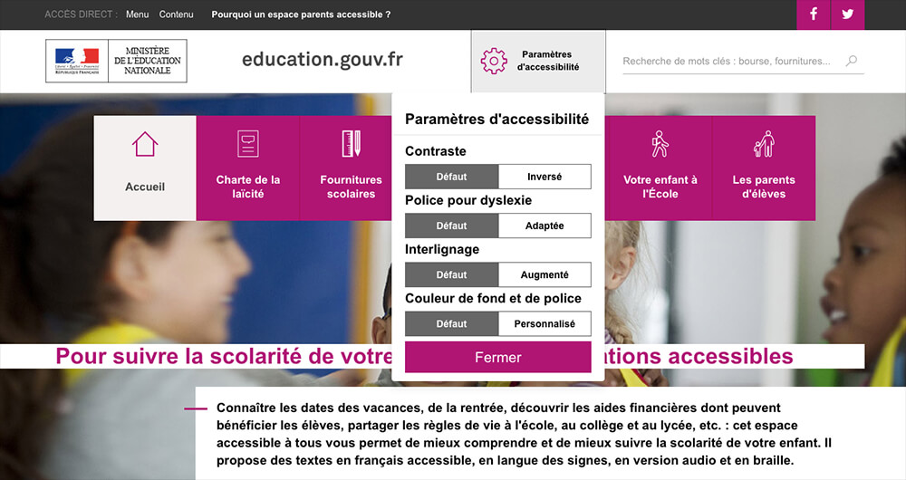
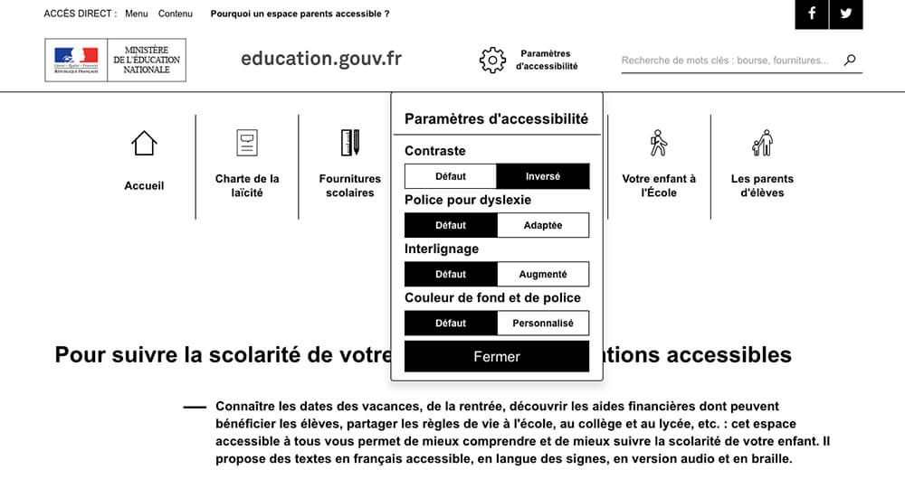

Introduction - cas utilisateurs
La mise en forme des textes est une problématique qui touche principalement les personnes ayant des troubles cognitifs (dyslexiques par exemple).
Par exemple, un interlignage trop faible est une difficulté supplémentaire pour ces utilisateurs. Il en sera de même pour une police fantaisiste, difficile à déchiffrer. En effet, certains utilisateurs ayant des difficultés de décodage (dyslexiques notamment) ont besoin d’avoir un texte calibré d’une certaine manière, afin de ne pas encombrer la compréhension. Une mise en forme qui ne respecte pas certains standards demande un effort supplémentaire à ces utilisateurs pour décoder, au détriment de la compréhension.
Visibilité des liens par rapport au texte environnant
Les liens dont la nature n’est pas évidente sont des liens qui peuvent être confondus avec un texte normal non cliquable, lorsqu’ils sont signalés uniquement par la couleur et qu’ils ne sont pas soulignés.
Par exemple, dans le texte « Nouvelle grève à la SNCF », si le mot « grève » est un lien signalé uniquement par la couleur, sa nature peut être ignorée par les utilisateurs ne percevant pas la couleur et accédant au contenu CSS activées. En revanche, dans le texte « Nouvelle grève à la SNCF, lire la suite », si « lire la suite » est un lien, un utilisateur ne percevant pas les couleurs n’aura pas de problème pour en comprendre la nature.
La meilleure des solutions est de conserver le soulignement natif des liens s’ils se trouvent au sein d’un texte.
Autrement, si ces liens sont uniquement signalés par la couleur, alors vous devez vous assurer que le rapport de contraste entre la couleur du texte du lien et du texte environnant respecte un niveau minimum (3:1). La fiche « Couleurs » contient une liste d’outils d’évaluation de contrastes à votre disposition pour tester ces éléments.
De plus, si vos liens en environnement de texte sont signalés uniquement par la couleur, votre seconde obligation est de définir un état au survol et à la prise de focus, qui ne soit pas un changement de couleur : par exemple, l’apparition d’un soulignement ou d’une forme.
Alternatives pour l’information donnée par la forme, taille et position
Comme pour les couleurs (cf. Fiche 6 : Couleurs), l’absence d’une alternative à une information donnée par la forme, la taille ou la position peut rendre un processus inutilisable ou un contenu incompréhensible pour les aveugles et les grands malvoyants.
Exemples d’indications données par la forme, la taille ou la position :
- indication donnée par la position : présence d’un marqueur visuel, pour indiquer la page active dans un menu de navigation ;
- indication donnée par la forme : mise en avant-plan pour indiquer un onglet actif ;
- indication donnée par la taille : modification de la taille de police dans un nuage de tags ;
- ou tout autre effet graphique similaire.
Pour toute information donnée par la forme, la taille ou la position dans un texte, une image, un média temporel ou non temporel, il faut s’assurer qu’il existe un autre moyen d’accéder à cette information, et que cet autre moyen est pertinent, c’est-à-dire qu’il permet de transmettre l’information dans tous les contextes de consultation et pour tous les utilisateurs.
Pour en savoir plus, vous pouvez consulter la fiche Informations par la forme et la couleur contenue dans le Guide de l’intégrateur RGAA 3.
Personnalisation de l’affichage
Important : les recommandations ci-dessous ne relèvent pas du niveau minimum légal français. Il s’agit de recommandations de niveau AAA qui permettent l’accès à l’information à certains utilisateurs. Certaines sont parfois difficiles à mettre en œuvre. Elles restent malgré cela des recommandations importantes, voire indispensables, pour l’accès à l’information de certains utilisateurs.
Sachez donc que certaines des recommandations suivantes peuvent être atteintes en mettant en place des systèmes de configuration à disposition des utilisateurs. Par exemple, vous pouvez proposer un bouton sur votre site qui permettra de retirer toutes les justifications de texte, ou un bouton pour augmenter les interlignages. Rapprochez-vous de l’équipe technique en charge de votre site pour en savoir davantage sur ces mécanismes de personnalisation. Vous pouvez également voir un exemple de mécanisme de personnalisation plus loin dans cette page.
Alignement des textes
Afin de conserver un espacement entre les mots qui reste constant, il est recommandé de ne pas justifier les textes. En effet, justifier un texte va modifier tous les espacements entre les mots, rendre ces espacements différents à chaque fois, et perturber la lecture et la compréhension des utilisateurs qui présentent des troubles de la lecture. Pour ces utilisateurs, il est préférable de conserver un espacement constant et donc de ne pas justifier les textes.
Cependant, la justification n’est pas interdite : il faut juste avoir conscience qu’elle peut perturber la lecture et la compréhension du texte chez certains utilisateurs.
Il est possible de donner la possibilité à l’utilisateur de désactiver la justification des textes présents sur un site, grâce à une barre d’outils spécialisée.
Interlignage
Il est préférable d’avoir un interlignage suffisamment large. On demande à ce que l’interlignage, c’est à dire l’espace entre les lignes et les paragraphes, soit au moins équivalent à 1,5 fois la taille du texte.
Faute de quoi, on peut prévoir un mécanisme qui permet d’augmenter la valeur de l’interligne à 1,5 fois la taille du texte, au moins.
Largeur des textes
Pour certains utilisateurs déficients visuels utilisant des loupes d’écrans ou ne disposant pas de visions centrale ou périphérique, une largeur de texte trop importante est très gênante pour la lecture.
On considère qu’une largeur de 80 caractères est la limite au-delà de laquelle les difficultés de lecture deviennent trop importantes.
Cette problématique est très difficile à prendre en charge sur une maquette habituelle et peut nécessiter de mettre en place des dispositifs de recomposition de la page, par exemple afficher le site sur une seule colonne de largeur maximale de 80 caractères.
Si le site est responsive, le mécanisme peut constituer à simuler sur un écran large l’affichage du site comme sur un mobile par exemple.
Personnalisation des couleurs et contrastes
Dans la Fiche 6 : Couleurs, nous avons vu que le contraste doit être suffisant entre la couleur de texte et la couleur d’arrière-plan des textes d’un site.
Cependant, les couleurs d’une charte graphique ne sont pas concernées par cette obligation de contraste. Ces couleurs et contrastes immuables peuvent toutefois poser des problèmes de lisibilité.
Ainsi, si les couleurs d’une charte graphique sont insuffisamment contrastées, la solution consiste à mettre à disposition des utilisateurs un mécanisme de personnalisation de l’interface. Dans l’idéal, ce mécanisme permettra :
- de renforcer les contrastes ;
- d’inverser les contrastes : par exemple en proposant une feuille de style passant le texte en jaune clair et les arrière-plans en bleu foncé ;
- de laisser l’utilisateur sélectionner la couleur de texte et la couleur d’arrière-plan de son choix, et de mémoriser cette préférence à l’aide d’un cookie par exemple.
Exemple de mécanisme de personnalisation
Sur le site Infos-Parents, une barre d’outils intitulée « Paramètres d’accessibilité » permet de modifier le contraste entre la couleur de texte et la couleur d’arrière-plan du site, la police d’écriture, l’interlignage, mais permet également de sélectionner des couleurs personnalisées.

